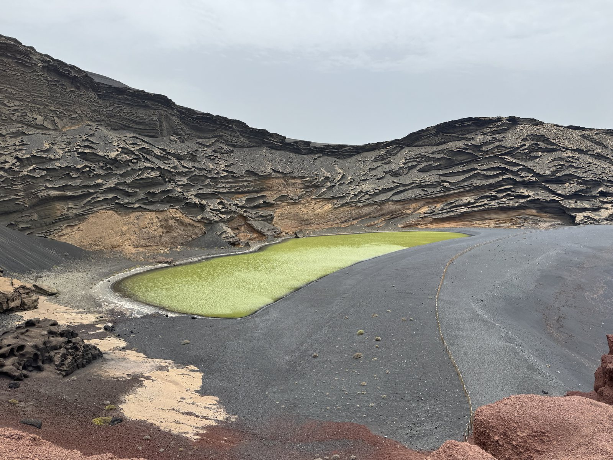
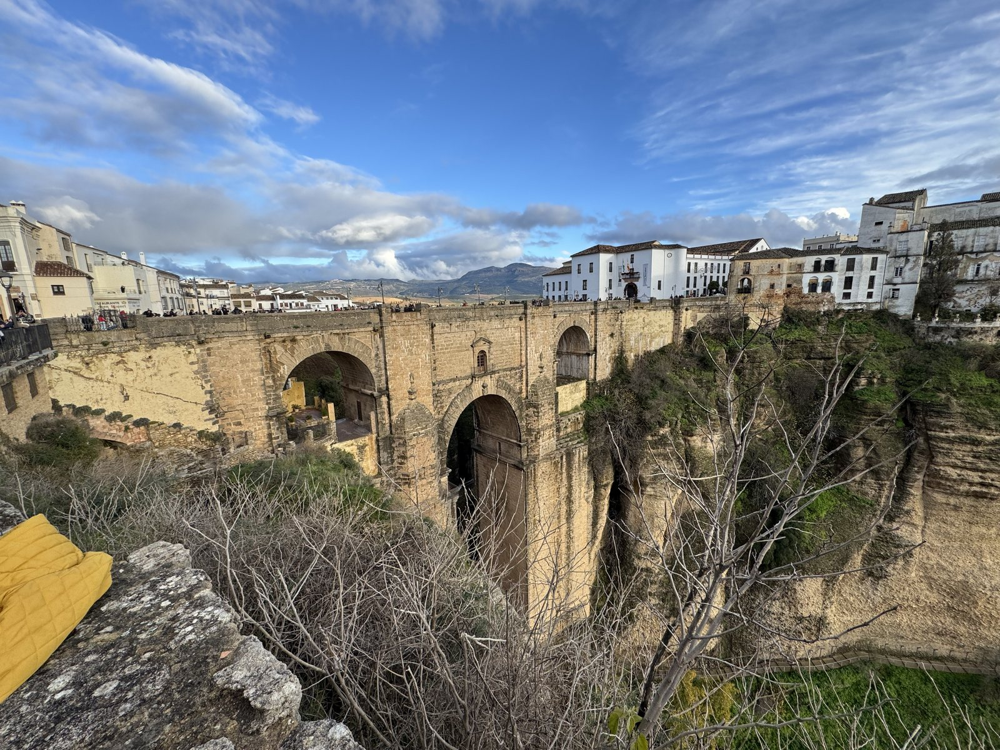
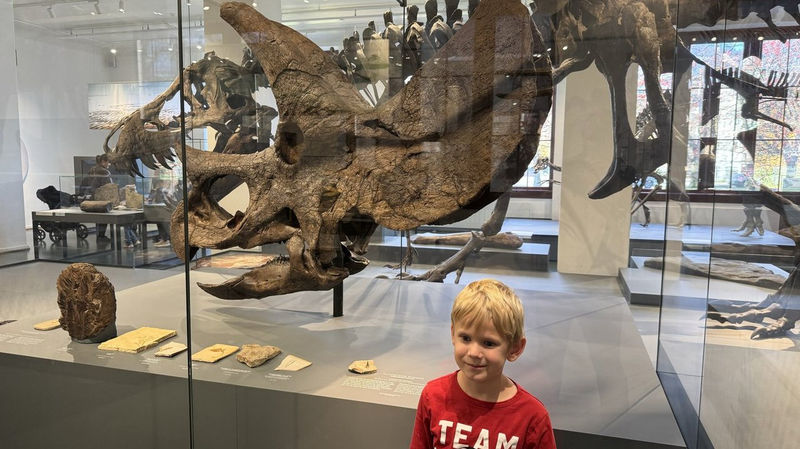

12.–24. 8. 2025Lanzarote s klukama
Ještěrky, sopky, černé pláže a nejlepší koupání. 12 dní, každý s videem, nákresem a tátovým zápisem.

21. 12. 2025 – 4. 1. 2026Andalusie s klukama
Vánoce na jihu Španělska: Gibraltar s opicemi, Tarifa, Ronda a výhled z hor. Dva týdny po dnech s videem, nákresem a tátovým zápisem.

24. 10. – 1. 11. 2026Oslo s klukama
Podzimní Oslo: fjord, muzea, Munch a babí léto na ostrovech.